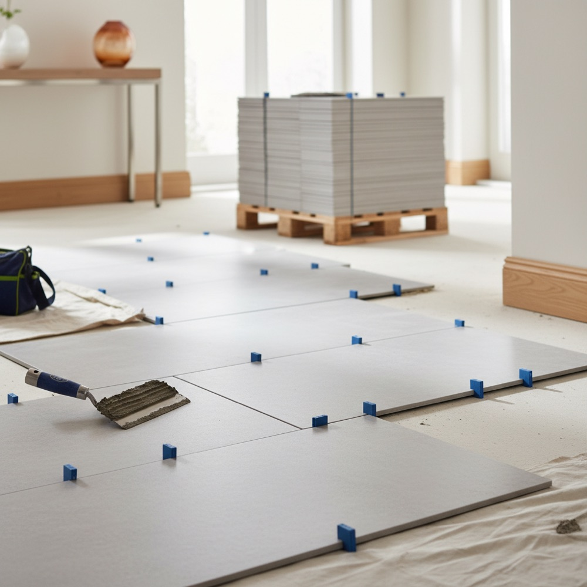

How Many Tiles Do I Need? Calculate Boxes + Waste
A practical guide to tile math: measuring area, converting to boxes, choosing the right waste percentage for your layout, and avoiding a mid-job shortfall.

Buying tile is unforgiving: too little and you are hunting for a matching batch halfway through, too much and you have paid for boxes you will return (or never will). The good news is the math is straightforward once you know the steps. Here is how to figure out exactly how many tiles — or boxes — you need, and the tile & flooring calculator will do the arithmetic for you.
Step 1: Measure the area in square feet
Tile is planned by area, not by counting tiles. Measure the length and width of the floor in feet and multiply. A bathroom floor that is 8 ft by 6 ft is 48 square feet. For walls or a backsplash, measure height × width of the area you are tiling.
For rooms that are not a simple rectangle, split the space into rectangles, calculate each, and add them together. An L-shaped room is just two rectangles. Closets, nooks, and bump-outs each get their own little calculation.
Step 2: Add a waste allowance
You will never use 100% of what you buy. Cuts at the walls, the occasional cracked tile, and future repairs all require extra. The standard allowances are:
| Layout | Waste to add | Why |
|---|---|---|
| Straight / grid | 10% | Minimal cuts, mostly at edges |
| Diagonal | 15% | More angled cuts at every wall |
| Herringbone / chevron | 20% | Two cut ends on most pieces |
| Mosaic / intricate | 15–20% | Lots of trimming around fixtures |
So our 48 sq ft bathroom in a straight layout needs 48 × 1.10 = 52.8 sq ft of tile to purchase.
Step 3: Convert square feet to boxes
Stores sell tile by the box, and each box lists its coverage in square feet. Divide the area (with waste) by the box coverage and round up to the next whole box.
If each box covers 12 sq ft: 52.8 ÷ 12 = 4.4, so you buy 5 boxes. You cannot buy 4.4 boxes, and the rounding up is exactly the buffer you want.
Be careful not to confuse "tiles per box" with "square feet per box." A box of large-format 24-inch tiles might hold only three or four pieces, while a box of small mosaics holds dozens. The square-footage figure is what matters.
Why you should always buy extra — and keep it
This is the tip that saves projects years down the road. Tile is produced in batches (called dye lots or production runs), and color can shift slightly from one run to the next. If you crack a tile in two years and go back for a single replacement, the new batch may not match the floor.
The fix is simple: buy your full quantity — including waste — in one order from one batch, and keep at least one full box after the job is done. Store it flat and dry. It is the cheapest insurance in home improvement.
Don't forget the extras
Tile itself is only part of the shopping list. Budget for:
- Thinset or mortar and grout, sized to your tile and joint width.
- Trim pieces like bullnose for finished edges, and transition strips where the tile meets another floor.
- Underlayment or backer board, especially in wet areas.
- Spacers, a notched trowel, and a tile cutter or wet saw if you are doing it yourself.
Worked example, start to finish
Say you are tiling a 10 × 12 ft kitchen floor in a diagonal layout with boxes that cover 15 sq ft each:
- Area: 10 × 12 = 120 sq ft.
- Diagonal waste at 15%: 120 × 1.15 = 138 sq ft.
- Boxes: 138 ÷ 15 = 9.2 → 10 boxes.
Plug your own numbers into the tile & flooring calculator to get your box count in seconds, then check our renovation cost guide if tiling is part of a bigger remodel.